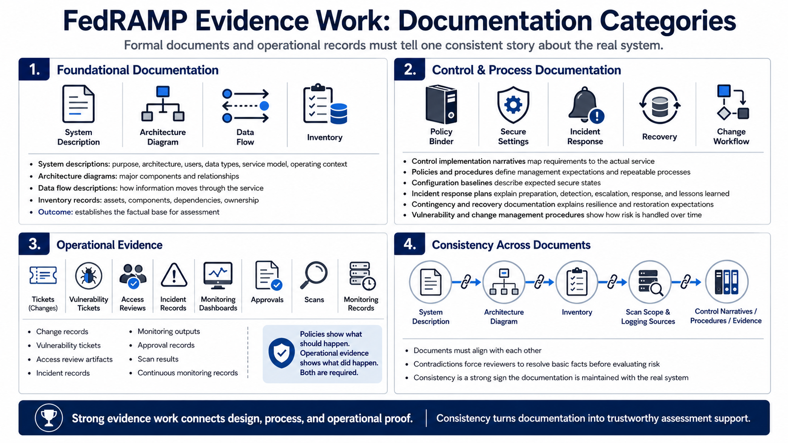

Core Documentation Types
Connecting to LMS... Progress: in progress

Narration
FedRAMP-oriented evidence work usually depends on several categories of documentation. System descriptions explain the purpose, architecture, users, data types, service model, and operating context. Architecture diagrams show major components and relationships. Data flow descriptions explain how information moves through the service. Inventory records identify assets, components, dependencies, and ownership. These documents establish the factual base for assessment.
Control implementation narratives connect security requirements to the actual service. Policies and procedures explain management expectations and repeatable processes. Configuration baselines describe expected secure states. Incident response plans explain how the organization prepares for, detects, escalates, responds to, and learns from security events. Contingency and recovery documentation explains resilience and restoration expectations. Vulnerability and change management procedures show how risk is handled over time.
Operational records are just as important as formal documents. Change records, vulnerability tickets, access review artifacts, incident records, monitoring outputs, approval records, scan results, and continuous monitoring records show whether processes are being performed. A policy may say what should happen. Operational evidence shows what did happen. Both are needed because control expectations usually require design and operation.
Different documents must tell a consistent story. The system description should match the architecture diagram. The diagram should match the inventory. The inventory should match scan scope and logging sources. Control narratives should match procedures and evidence. When documents contradict each other, reviewers have to resolve basic facts before they can evaluate risk. Consistency is one of the clearest signs that documentation is being maintained with the real system.